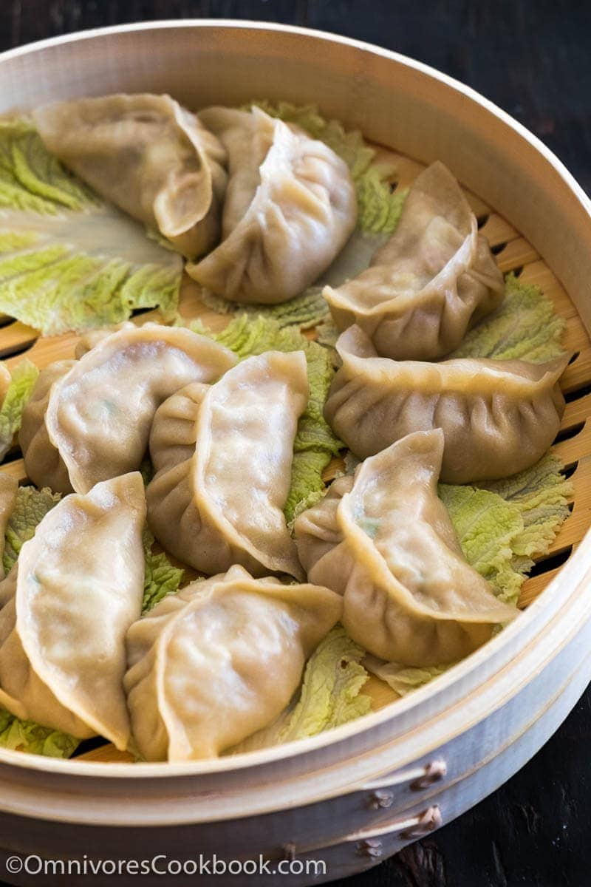

Dumpling

Description
Dumplings are intimidating (well, they can be). But they also are, in fact, delicious. No matter what you stuff
them with, the concept of pillowy, soft dough encasing a luscious, super flavorful filling is enough to warm you
up from inside to out. Well, with our homemade dumpling recipe, we’re bringing that warm, fuzzy feeling right to
your very own kitchen table.
Ingredients
- 4 cups all-purpose flour(500 g)
- 2 teaspoons salt, divided
- 1 ¼ cups warm water(300 mL)
- 2 cups red cabbage(200 g)
- 2 cups green onion(300 g), sliced
- 6 cloves garlic, minced
- 4 tablespoons ginger, minced
- 2 tablespoons soy sauce
Steps
- In a large bowl, combine the flour, 1 teaspoon of salt, and the warm water and mix until well-combined.
- Roll out dough on a floured surface and knead until smooth.
- Divide the dough into 4 equal parts.
- Roll out 1 piece of dough into a thin log and divide into 6 or 8 pieces, depending on the size of dumplings
you want. Repeat with the remaining dough portions.
- Lightly flour the dough pieces and roll out 1 piece into a thin circle roughly 4-inches (10 cm) in diameter.